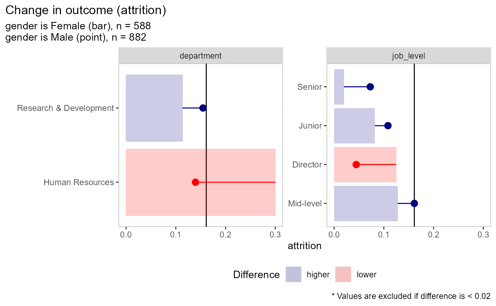
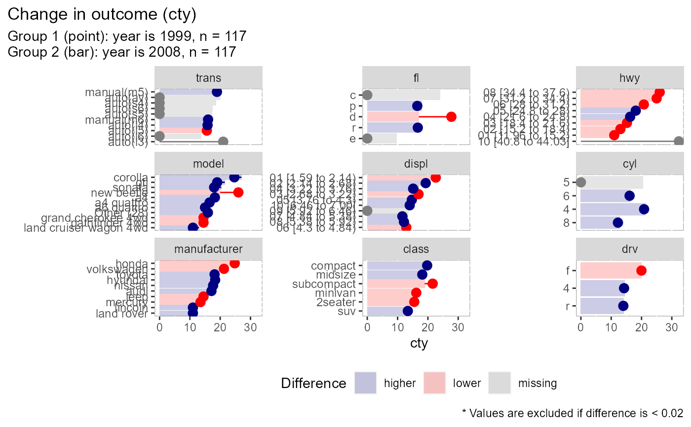
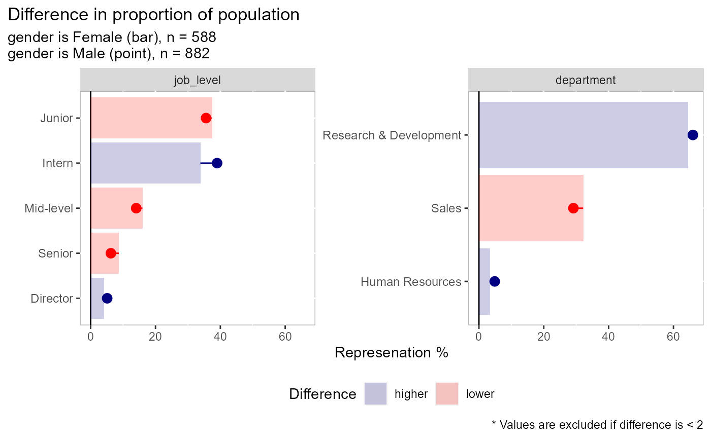
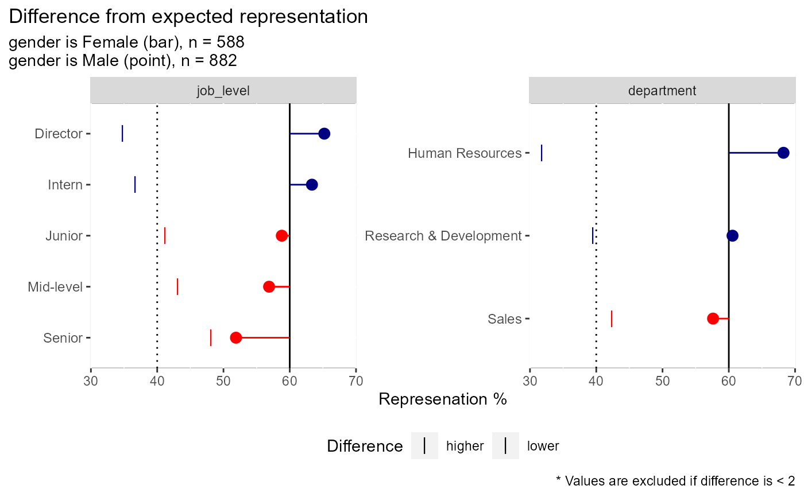
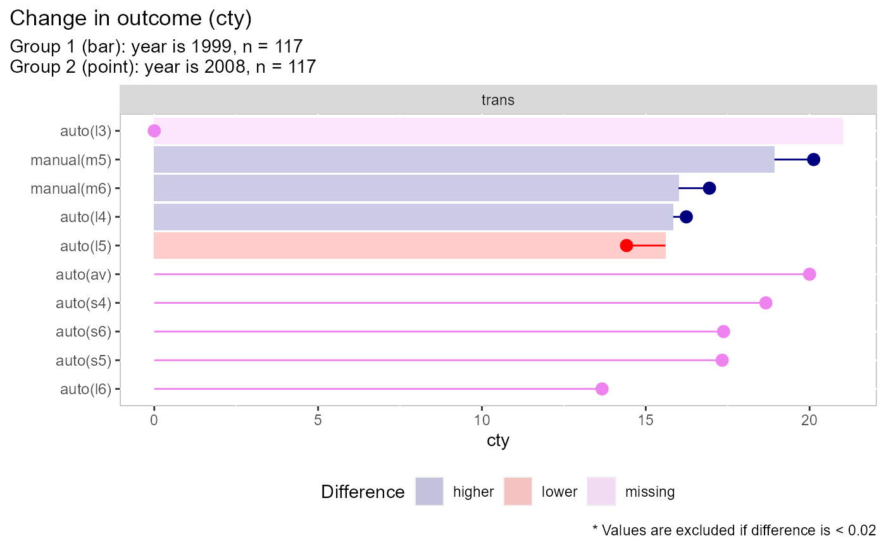

Visualize variation between two groups
plot_group_split( df, split_on, type = c("dv", "percent", "count"), dep_var, ..., n_cat = 10, trunc_length = 100, threshold = 0.02, base_group = c("1", "2"), return_data = FALSE, n_field = 9, color_over = "navyblue", color_under = "red", color_missing = "grey50", title = NULL, subtitle = NULL, caption = NULL )
Arguments
| df | dataframe to evaluate |
|---|---|
| split_on | variable to split data / group by |
| type | the outcome or dependent variable ("dv"), the percent of obs. ("percent"), or the number of obs. ("count") |
| dep_var | dependent variable to use (column name) |
| ... | Arguments passed on to
|
| n_cat | the number of factors to keep in the y-axis. Factors will be
prioritized by the size of the difference and may not match the way
categories are collapsed in |
| trunc_length | number of charcters to print on y-axis |
| threshold | threshold for excluding nominal differences. The value should reflect the type, if the count is in the hundreds you might use 20, meaning when viewing count differences, values where the difference is <20 will be excluded. For proportion/percent and the dv type, the default is 0.02 or 2 percept |
| base_group | Should group 1 or group 2 be the base. This group will be the bar and the other will be the point. |
| return_data | When TRUE will return data frame instead of a plot. |
| n_field | How many fields/facets should the plot return. |
| color_over | Color to use when point is higher than bar |
| color_under | Color to use when point is lower than bar |
| color_missing | Color to use when either a point or bar is missing |
| title | title for chart |
| subtitle | subtitle for chart |
| caption | caption for chart |
Examples
plot_group_split( ggplot2::mpg %>% dplyr::select(year, cty, trans), split_on = "year", type = "dv", dep_var = "cty", base_group = "1", # return_data = TRUE, color_missing = "violet" )